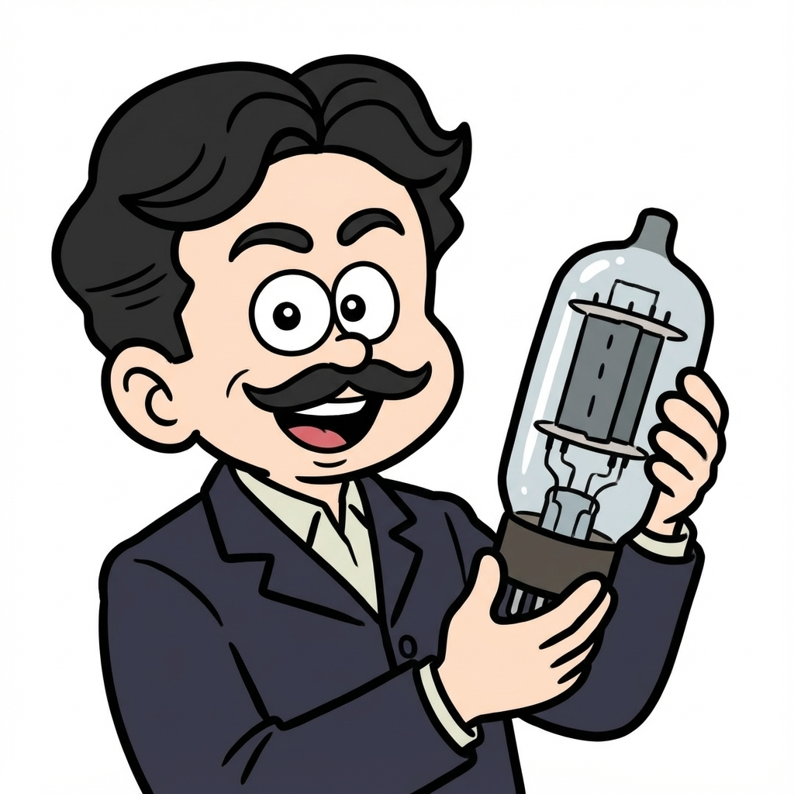

ジョン・フレミング
電気制御の進歩に貢献！フレミングが発明した「二極真空管」
エピソード解説

ええ！？真空管ってパソコンの先祖みたいなものなの？

いかにも。私が発明した二極真空管がなければ、ラジオもコンピュータも生まれなかったかもしれんぞ。
ここがスゴい！
フレミングは、エジソン効果（電球の内側が黒くなる現象）を詳しく研究し、電流が一方通行にしか流れない性質を発見。これを利用して、無線信号の検波（信号を取り出すこと）に成功しました。これが後の電子工学の発展の礎となったのです。